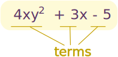

Polynomials - Long Multiplication
A polynomial looks like this:
|  |
| example of a polynomial this one has 3 terms |
We can multiply small polynomials using the method shown on Multiplying Polynomials
But when the polynomials have 3 or more terms it is often easier (and less likely to have a mistake) when we use a method similar to Long Multiplication for Numbers (please read that page first).
The Method
Choose one polynomial (the longest is a good choice) and then:
- multiply it by the first term of the other polynomial, writing the result down
- then multiply it by the second term of the other polynomial, writing the result under the matching terms from the first multiplication
- then multiply it by the third term of the other polynomial (if any) etc ...
- lastly, add up the columns.
Laying the work out neatly in columns is the key, like this:
(I wrote column headings of x, x2 and x3, but you don't have to)
By lining up the columns, and being careful to put the terms under the correct columns, the job becomes "automatic", and we can easily look back to see if we got it right, too.
But what happens if a polynomial is missing, say, an x term or an x2 term? Just leave that column blank!
Here is a more complicated example, with blank gaps:
More than One Variable
So far we have been multiplying polynomials with only one variable (x), but how do we handle polynomials with two or more variables (such as x and y)? What are the column headings?
Just ignore the columns in the question, write down the answers as they come, always checking to see if we could put an answer under a matching answer: